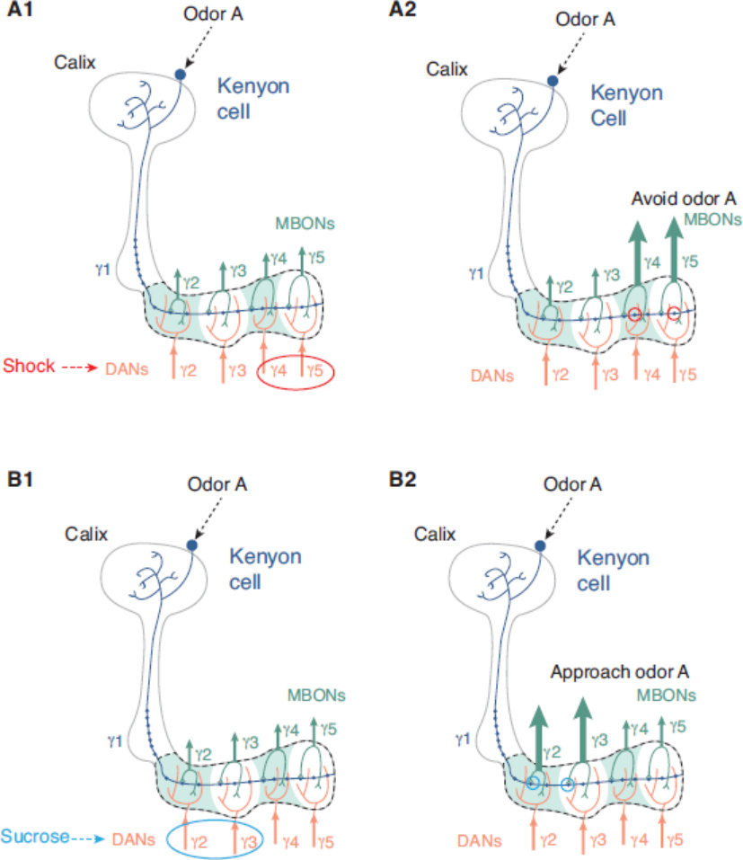

Chương 7 — Cảm Xúc Ở Côn Trùng Và Động Vật Không Xương Sống Khác
Sự vắng mặt của tân vỏ não dường như không ngăn một sinh vật trải nghiệm các trạng thái ảnh hưởng.
—Tuyên Bố Cambridge Về Ý Thức, 2017 (fcmconference.org).
Charles Darwin tin vào tính liên tục của các trạng thái cảm xúc nội tại giữa các loài, trải dài tận đến các động vật không xương sống. "Ngay cả côn trùng," ông viết, "cũng biểu lộ sự giận dữ, kinh hoàng, ganh ghét và tình yêu qua tiếng kêu rơi rião của chúng" (Darwin 1872/1965). Niềm tin đó, tuy nhiên, phản ánh việc chính Darwin đã nhân hình hóa một cách không e ngại, chứ không phải bằng chứng khoa học vững chắc. Có bằng chứng về bất cứ thứ gì giống các trạng thái cảm xúc nội tại ở côn trùng không? Chúng ta đã học được điều gì từ các nghiên cứu về côn trùng mà có liên quan đến sự hiểu biết của chúng ta về các trạng thái cảm xúc ở các động vật khác, bao gồm cả con người? Các câu trả lời cho những câu hỏi này vẫn chưa rõ ràng. Tuy nhiên, chẳng qua chỉ vì Darwin thường đúng trong các trực giác khác của ông về sinh học và tiến hóa, cũng đáng để cân nhắc những gì đã được học từ các nghiên cứu hiện đại về các hành vi phòng vệ và các trạng thái nội tại liên quan ở côn trùng.
Có ít nhất hai lý do khiến việc nghiên cứu cảm xúc ở các động vật không xương sống thú vị và quan trọng đến vậy. Một lý do là nó buộc chúng ta phải đưa một mức phân tích trừu tượng vào cách trình bày về cảm xúc của chúng ta. Nghịch lý thay, mặc dù Darwin đã bị cám dỗ nhân hình hóa các hành vi cảm xúc của côn trùng, việc nhìn lại những con vật này trong khuôn khổ của cuốn sách này buộc chúng ta phải áp dụng một quan điểm rộng hơn và mang tính chức năng, cần phải hiểu một hệ sinh thái không phải của con người. Các động vật không xương sống như côn trùng không có tân vỏ não (chỉ các động vật có vú mới có một tân vỏ não đúng nghĩa). Trên thực tế, các động vật không xương sống thậm chí không có hạch hạnh nhân, cũng không có vùng dưới đồi; não của chúng thực sự khác biệt hoàn toàn so với não của chúng ta. Nếu bao giờ chúng ta muốn xây dựng một robot có cảm xúc, chúng ta tốt hơn hết là phải hiểu cảm xúc hoạt động thế nào trong một não côn trùng.
Một lý do thứ hai cho sự quan tâm này nằm ở nhu cầu của chúng ta phải hiểu các cảm xúc đã phát sinh trong tiến hóa như thế nào, và những khối xây dựng nào là những thứ xuất hiện đầu tiên. Những hệ thần kinh rất đơn giản, chẳng hạn các kiến trúc dạng mạng lưới thấy ở sứa và các hệ thần kinh nhỏ của giun, có lẽ đã phát sinh cách đây 540 đến 600 triệu năm. Một số trong những con vật này là đối tượng được nghiên cứu intensively trong thần kinh học hiện đại. Chẳng hạn, con giun C. elegans đã có tất cả các kết nối giữa khoảng ba trăm nơ-ron của hệ thần kinh của nó được lập bản đồ chi tiết. Đáng chú ý, các kênh ion, các chất dẫn truyền thần kinh, các peptid và các phân tử khác được biểu hiện bởi các nơ-ron của C. elegans khá giống với những phân tử được biểu hiện trong các nơ-ron của động vật có vú—với ngoại lệ đáng chú ý là các kênh natri đóng bằng điện thế, vốn thiếu ở con giun này.
Mặc dù việc nghiên cứu các loài rất khác với chúng ta vì thế mang lại nhiều thông tin vì nhiều lý do, điều quan trọng là phải ghi nhớ rằng sinh học thần kinh so sánh không giống như có một cỗ máy thời gian. Chúng ta có thể nghiên cứu tất cả sự đa dạng của các động vật có hệ thần kinh, nhưng tất cả chúng đều là các loài hiện đại, phái sinh—chứ không phải các loài tổ tiên từ đó sự đa dạng này đã tiến hóa. Mặc dù cách tiếp cận so sánh này giúp chúng ta trừu tượng hóa các đặc tính chức năng rộng, điều quan trọng là phải ghi nhớ rằng não của các động vật khác—đặc biệt là các động vật không xương sống—không phải "ít tiến hóa hơn" não của chúng ta. Thay vào đó, chúng đã tiến hóa để thực hiện những chức năng thích nghi tốt nhất với sự sống còn và sinh sản của các loài cụ thể đó. Các hệ thần kinh của côn trùng đương thời cũng "hiện đại" như các hệ thần kinh của con người.
Hành Vi Tránh Né Được Học Ở Ruồi Giấm Drosophila
Ruồi giấm (hay chính xác hơn, ruồi giấm, vì con vật bị thu hút bởi mùi giấm do quả chín hoặc quả thối tạo ra), Drosophila melanogaster, đã là một sinh vật mô hình chủ chốt trong việc nghiên cứu các cơ chế của sự di truyền và phát triển, mang về nhiều Giải Nobel cho các nhà nghiên cứu đã dùng di truyền học dễ thao tác bằng thực nghiệm của nó để điều tra những cơ chế đó. Trong thập niên 1960, Seymour Benzer, một nhà sinh học phân tử tại Caltech đã có những đóng góp nền tảng cho sự hiểu biết của chúng ta về cấu trúc của các gen, bắt đầu xác lập Drosophila như một hệ thống để nghiên cứu cách các gen kiểm soát hành vi động vật. Những nghiên cứu đó đã xác lập cả một lĩnh vực mà ngày nay có hàng nghìn nhà nghiên cứu, và lĩnh vực này đã được ghi nhận bằng việc trao Giải Nobel Y học năm 2017 cho Michael Rosbash, Jeff Hall, và Michael Young nhờ họ xác định các gen kiểm soát nhịp sinh học, xuất phát từ những con ruồi đột biến ban đầu được cô lập bởi Benzer và sinh viên của ông là Ron Konopka vào đầu thập niên 1970.
Trong số nhiều đóng góp khác của mình, Benzer và các sinh viên của ông đã cho thấy Drosophila có khả năng học tập liên kết gây khó chịu; những con ruồi bị cho sốc điện trong lúc tiếp xúc với một mùi cụ thể sẽ học cách tránh mùi đó. Quan sát này gây ngạc nhiên cho nhiều người vào thời đó, những người đã giả định rằng ruồi là những cỗ máy tự động nhỏ bé không có khả năng gì ngoài các hành vi phản xạ. Hơn nữa, Benzer và các đồng nghiệp tiếp tục cho thấy học tập liên kết này phụ thuộc vào một số phân tử giống như những phân tử được cho là liên quan đến học tập liên kết ở các sinh vật khác (chẳng hạn, ốc biển Aplysia californica, được nghiên cứu bởi người đoạt giải Nobel Eric Kandel và các đồng nghiệp). Những nghiên cứu tiên phong này, do đó, đã chứng minh sự bảo tồn tiến hóa của điều kiện hóa gây khó chịu kiểu Pavlov cũng như sự bảo tồn của một số cơ chế phân tử nền tảng. Nhưng kể từ thời điểm đó, chúng ta đã học được gì về các cơ chế thần kinh làm nền cho học tập liên kết ở ruồi? Những nghiên cứu đó có dạy chúng ta điều gì liên quan đến học tập cảm xúc ở các sinh vật bậc cao hơn không?
Học tránh né khứu giác ở Drosophila về bề ngoài giống điều kiện hóa sợ hãi ở loài gặm nhấm: một mùi là CS, và một cú sốc là US. (Các chất tạo mùi cũng có thể được dùng làm CS cho điều kiện hóa hướng phần thưởng ở Drosophila, với sucrose là US.) Các công cụ di truyền mạnh mẽ có sẵn trong sinh vật này, kết hợp với các công nghệ mới để thao tác hoạt động nơ-ron như quang di truyền học (hộp 5.1), đã bắt đầu cung cấp những nhận thức quan trọng về tổ chức của các mạch thần kinh làm nền cho các hành vi được học này. Như trong tài liệu về điều kiện hóa sợ hãi ở loài gặm nhấm, các nghiên cứu về điều kiện hóa khứu giác ở Drosophila cho đến nay đã dạy chúng ta, có thể nói rằng, nhiều hơn về học tập và trí nhớ hơn là về cảm xúc. Tuy nhiên, những phát hiện quan trọng đã xuất hiện, minh họa các cơ chế mà nhờ đó não có thể gắn một tính tích cực–tiêu cực cho một kích thích trước đó trung tính.
Một con ruồi có thể được huấn luyện để tiếp cận hay tránh né một mùi trung tính, tùy thuộc vào việc US được ghép cặp với mùi đó là hướng phần thưởng (sucrose) hay gây khó chịu (sốc điện). Não của con ruồi có thể gán một giá trị tích cực hay tiêu cực (tính tích cực–tiêu cực) cho cùng một kích thích, tùy theo trải nghiệm của nó, bằng cách nào? Các công trình sớm ở ruồi của Martin Heisenberg cung cấp bằng chứng rằng chất dẫn truyền thần kinh dopamine (DA) tham gia vào điều kiện hóa gây khó chịu, trong khi octopamine (tương đương ở côn trùng của chất dẫn truyền thần kinh norepinephrine thấy ở các động vật có xương sống) tham gia vào học tập phần thưởng. Ngược lại, trong các nghiên cứu ở động vật có vú, DA được cho là chỉ tham gia vào học tập phần thưởng. Phát hiện này được một số người diễn giải theo nghĩa hệ chất dẫn truyền DA có thể mã hóa các tính tích cực–tiêu cực đối lập, ở động vật có xương sống so với động vật không xương sống. Tuy nhiên, các nghiên cứu gần đây hơn đã cho thấy các nơ-ron DA kiểm soát cả điều kiện hóa hướng phần thưởng lẫn điều kiện hóa gây khó chịu ở ruồi (mặc dù octopamine cũng tham gia vào loại trước). Điều này là có thể vì các phân nhóm nơ-ron DA phân biệt về gen và giải phẫu là cần thiết cho hai hình thức học tập khác nhau (hình 7.1A1 so với B1, các DAN) (Owald và Waddell 2015). Quả thật, một câu chuyện tương tự đã xuất hiện từ các nghiên cứu ở loài gặm nhấm và linh trưởng: trong khi DA ban đầu được liên kết với việc thúc đẩy các hành vi nhằm thu được phần thưởng (tìm kiếm và học tập), giờ đây rõ ràng là DA cũng tham gia vào sự hưng phấn và tính nổi bật (định hướng và chú ý), và thậm chí vào việc phát hiện nhanh các kích thích gây khó chịu. Một lần nữa, các mặt khác nhau này của vai trò của DA trong cảm xúc có vẻ được trung gian bởi các phân nhóm nơ-ron phân biệt (Bromberg-Martin, Matsumoto, và Hikosaka 2011).
Mặc dù còn nhiều điều phải học về các cơ chế chi tiết của tính biến đổi trong hệ DA của ruồi, có một số kết luận tổng quát quan trọng có thể rút ra. Thứ nhất, và quan trọng nhất, tính tích cực–tiêu cực cảm xúc của một US cho trước không được mã hóa đơn thuần bởi danh tính của một chất dẫn truyền thần kinh cụ thể; DA không tự thân mã hóa phần thưởng hay khoái lạc, như niềm tin phổ biến thường cho. Thay vào đó, tính tích cực–tiêu cực tự thân của một US cho trước (sốc hay sucrose) được xác định bởi các nơ-ron DA nào mà nó kích hoạt, và việc các nơ-ron DA này có ảnh hưởng đến các synap với các nơ-ron trung gian tiếp cận hay tránh né hay không (Aso et al. 2014); sự kết nối này có khả năng được quy định bởi gen và xuất hiện trong quá trình phát triển khi não được nối dây với nhau. Tức là, không phải danh tính của một hóa chất trong não (chẳng hạn, dopamine), mà là sự kết nối của các nơ-ron giải phóng hóa chất đó, quyết định hành vi. Cuối cùng, chính chức năng của các mạch thần kinh quy định cái gì đang được đóng góp vào một trạng thái cảm xúc.
Thứ hai, trái với một quan điểm thị hành, DA không hoạt động như một "hệ phun tưới" trong não, tác động qua cái gọi là truyền khối đơn thuần dội một dải rộng các nơ-ron theo kiểu khuếch tán. Thay vào đó, nó tác động theo cách phân vùng không gian rất cao tại các synap cụ thể, vốn được xác định bởi danh tính di truyền và sự nối dây của một lớp nơ-ron DA cụ thể—một cơ chế tác động thường được liên quan nhiều hơn với các chất dẫn truyền thần kinh cổ điển như glutamate, hơn là với các chất điều hòa thần kinh như dopamine.
Thứ ba, khả năng của não liên kết một mùi cho trước (CS) với một US có tính tích cực hay tiêu cực phụ thuộc vào (a) sự biểu hiện thưa thớt của mùi bởi các tế bào Kenyon (tức là hoạt động của một số lượng tương đối nhỏ các nơ-ron đặc hiệu mùi rất cao), và (b) sự chi phối của một tế bào Kenyon phản ứng CS cho trước lên nhiều phân vùng, nơi chúng tạo synap với các nơ-ron đầu ra thể nấm (MBON) thúc đẩy tiếp cận hay tránh né, theo cách đặc hiệu phân vùng (hình 7.1, γ2, γ3, γ4, γ5). Như được cho thấy bởi công trình tinh tế của Vanessa Ruta và các đồng nghiệp, các synap tế bào Kenyon–MBON này có thể được củng cố hay suy yếu một cách chọn lọc, tùy theo các nơ-ron DA nào được kích hoạt bởi US và DA được giải phóng ở phân vùng nào (hình 7.1, A2 so với B2). Thú vị là, bằng chứng ở chuột nhắt chỉ ra rằng các phân nhóm nơ-ron DA khác nhau trong vùng tegmentum bụng, truyền thống được cho là chỉ liên quan đến phần thưởng, có thể kiểm soát hoặc phần thưởng hoặc trừng phạt (nhưng không phải cả hai) (Lammel et al. 2012). Vậy, một nguyên tắc tổng quát nổi lên từ Drosophila là các phân tử (như DA) không mã hóa tính tích cực–tiêu cực; đúng hơn, chính sự kết nối nơ-ron quyết định một kích thích cụ thể là phần thưởng hay trừng phạt.
Các nghiên cứu được mô tả ở trên đã cung cấp những nhận thức quan trọng về cách não có thể linh hoạt gắn một tính tích cực hay tiêu cực cho một kích thích trước đó trung tính, ở một mức chi tiết cơ chế mà chưa đạt được trong các nghiên cứu về bất kỳ hệ động vật có vú nào. Chức năng thích nghi này là nền tảng cho khả năng của động vật học xem có nên tiếp cận hay tránh né một vật thể hay kích thích ban đầu xa lạ hay không. Tuy nhiên, để một hệ thống như vậy hoạt động được, não phải được "nối dây sẵn," ít nhất ở một mức độ nào đó, với các biểu hiện bẩm sinh về tính tích cực và tiêu cực—trong trường hợp này là các lớp nơ-ron DA khác nhau trung gian phần thưởng so với trừng phạt—mà sau đó có thể được liên kết với các kích thích mà tính tích cực–tiêu cực của chúng phải được học qua trải nghiệm (Aso et al. 2014). Không có một nền tảng bẩm sinh nào như vậy, sẽ không có gì làm nền cho tính tích cực–tiêu cực, không có gì mà các liên kết được học có thể xây dựng trên đó. Ngược lại, những biểu hiện bẩm sinh về tính tích cực–tiêu cực đó sẽ không được chọn lọc trong tiến hóa nếu chúng không mang lại cho loài một lợi thế sống còn. Chọn lọc tự nhiên đã tác động để liên kết các mạch cảm giác phát hiện các kích thích cụ thể, có ý nghĩa sinh thái, với các mạch vận động kích hoạt các phản ứng thích hợp (tiếp cận hay tránh né) thông qua việc kích hoạt các biểu hiện tính tích cực–tiêu cực đó. Liệu các hệ tính tích cực–tiêu cực giống nhau có tham gia vào tránh né hay tiếp cận được học hay không vẫn còn phải được điều tra.

Hình 7.1: Sự giải phóng dopamine phân vùng kiểm soát điều kiện hóa hướng phần thưởng so với điều kiện hóa gây khó chịu. Một mùi cho trước (mùi A) kích hoạt một tế bào Kenyon của thể nấm (MB), sợi trục của nó tạo synap với các nơ-ron đầu ra thể nấm (MBON) ở bốn phân vùng khác nhau của thùy gamma (đường màu xanh dương/các chấm màu xanh dương). Bốn phân vùng khác nhau này của thùy gamma được ghi là γ 2–5 trong hình. Các MBON được nối dây sẵn để gợi ra tiếp cận (γ2, γ3) hay tránh né (γ4, γ5). Việc kích hoạt tế bào Kenyon bởi Mùi A, khi không có US (sốc hay sucrose), quá yếu để gợi ra hoạt động ở các MBON. Tuy nhiên, việc ghép cặp Mùi A với một US gây ra sự giải phóng dopamine (DA) cục bộ ở các phân vùng cụ thể, vốn thuận hóa truyền dẫn synap giữa các tế bào Kenyon và các MBON ở phân vùng đó. Mùi A có thể được ghép cặp với một US trừng phạt (sốc, A1) hay một US tạo phần thưởng (sucrose, B1). US trừng phạt kích hoạt một tập con nơ-ron DA (DAN; γ4 và γ5) khác với US tạo phần thưởng (DAN γ2 và γ3). Vì các DAN này chi phối các phân vùng khác nhau của thùy gamma,
việc kích hoạt chúng sửa đổi chọn lọc các synap KC → MBON ở các phân vùng tương ứng (các hình bầu màu đỏ so với màu xanh dương trong A1 so với B1). Sau huấn luyện với một cú sốc (A1), việc trình bày mùi A ưu tiên kích hoạt các MBON chi phối các phân vùng γ4,5, dẫn đến tránh né (A2). Ngược lại, sau huấn luyện với sucrose (B1), việc trình bày mùi A ưu tiên kích hoạt các MBON chi phối các phân vùng γ2,3, dẫn đến tiếp cận. Được sửa đổi với các đơn giản hóa từ Cohn, Morantte, và Ruta 2015.
Drosophila Có Các Trạng Thái Cảm Xúc Không?
Nhưng việc kích hoạt một hệ thần kinh biểu diễn tính tích cực–tiêu cực có tương đương với việc kích hoạt một trạng thái cảm xúc nội tại không? Việc một con ruồi luôn luôn thoát khỏi một vật thể trùm đến dần, trên khoảng thời gian hàng chục đến hàng trăm mili giây (Card và Dickinson 2008), có nhất thiết có nghĩa là kích thích đã kích hoạt một trạng thái cảm xúc không? Chúng tôi sẽ lập luận rằng không, trừ khi một số tính chất khác ngoài một biểu hiện của tính tích cực–tiêu cực cũng hiện diện (chương 3). Cần bao nhiêu tính chất khác? Ở đây, chúng tôi thừa nhận rằng ở các động vật đơn giản hơn như ruồi có thể có các trạng thái cảm xúc đơn giản, được cấu thành từ các "nguyên thủy cảm xúc," tương đương với một vài trong các tính chất mà chúng tôi đã liệt kê trong hình 3.2—ít hơn tập hợp đầy đủ, nhưng nhiều hơn chỉ một trong số chúng. Những nguyên thủy này, mà người ta có thể nghĩ như các "khối xây dựng" của một trạng thái cảm xúc, có thể có, ngoài tính tích cực–tiêu cực, cả tính bền bỉ, khả năng co giãn quy mô, sự lồng ghép, hay tính tổng quát hóa (ảnh hưởng linh hoạt của trạng thái lên hành vi trong nhiều bối cảnh). Có bằng chứng nào về các nguyên thủy cảm xúc như vậy trong các phản ứng hành vi của ruồi với các kích thích bẩm sinh gây khó chịu không?
Một nghiên cứu gần đây đã điều tra câu hỏi này bằng cách phân tích định lượng các phản ứng hành vi của ruồi với nhiều lần trình bày một kích thích tối chuyển động tịnh tiến (quét) từ phía trên (Gibson et al. 2015). Những kích thích như vậy hiệu quả đáng kể trong việc gợi ra các phản ứng thoát thân hay tránh né bẩm sinh, không chỉ ở ruồi mà còn ở chuột và các động vật có vú khác, có lẽ vì chúng kích hoạt các mạch thị giác đã tiến hóa để phát hiện sự tiếp cận của một kẻ săn mồi trên không (hãy nhớ hình 2.5). Tuy nhiên, rất khó tìm kiếm các tính chất như tính bền bỉ và khả năng co giãn quy mô sau các lần trình bày đơn lẻ của các kích thích như vậy, vì ruồi thoát đi và không thể được thu hồi. Do đó, để xem xét phản ứng của ruồi với nhiều lần trình bày một kích thích đe dọa, chúng được nhốt trong một đấu trường plexiglass lớn có nắp trong suốt (hình 7.2A).

Hình 7.2: Hệ thống thí nghiệm để điều tra liệu các phản ứng phòng vệ bẩm sinh ở ruồi có thể hiện bất kỳ nguyên thủy cảm xúc nào hay không. (A) Ruồi trong một đấu trường có nắp được tiếp xúc lặp lại với một vật thể tối chuyển động tịnh tiến phía trên. Chúng phản ứng với số lần trình bày kích thích ngày càng tăng bằng sự đứng hình, tăng hoạt động vận động và nhảy nhót, nhưng không thể thoát đi. Sau khi kích thích kết thúc, hành vi phòng vệ của ruồi bền bỉ một thời gian trước khi lắng xuống. (B, C) Các phản ứng hành vi của ruồi với kích thích có thể được mô hình hóa bằng cách giả định rằng não ruồi hoạt động như một "bộ tích phân rò rỉ" của sự tiếp xúc kích thích. (B) Phép tương tự với một xô rò rỉ; mỗi lần kích thích đi qua phía trên, thêm nước được đổ vào xô, vốn rò ở một tốc độ cố định. Nếu tốc độ và tần suất tiếp xúc kích thích vượt quá tốc độ rò, xô sẽ đầy, tạo ra các mức tối đa của hành vi phòng vệ. Một khi kích thích ngừng, hành vi phòng vệ sẽ bền bỉ cho đến khi xô rút cạn. Mô hình này có những điểm tương đồng với mô hình thủy lực do Konrad Lorenz đề xuất để giải thích các "trạng thái động lực" nội tại (xem hình 5.2), ngoại trừ rằng mô hình sau cho rằng 'xô' được đổ đầy tự động, chứ không phải để đáp ứng với các kích thích bên ngoài, và không đề cập đến tính bền bỉ. Mô hình này có thể giải thích việc tích lũy thông tin về mối đe dọa dẫn đến các hành vi cụ thể như thế nào. (C) Hình thức hóa toán học của mô hình. Trục y biểu diễn giá trị của tích phân (lượng nước trong xô ở [B]), trục x biểu diễn thời gian. Mỗi đường thẳng đứng biểu diễn một lần kích thích phía trên đi qua. Các đường đứt nét minh họa cách các hành vi phòng vệ khác nhau có các
ngưỡng khác nhau, vốn được hệ thống vượt qua lần lượt với sự tích lũy thông tin, tiến triển từ đứng hình đến đi nhanh hơn đến nhảy nhót. Mô hình lý giải các tính chất cảm xúc về khả năng co giãn quy mô và tính bền bỉ. Phản ứng với bóng tối cũng thể hiện một tính tích cực–tiêu cực tiêu cực, và tổng quát hóa cho các tình huống khác nhau. Được sao chép với sự cho phép từ Gibson et al. 2015.
Đáng chú ý, ruồi trở nên ngày càng "phấn khích" (hoạt động), được đo bằng mức tăng hoạt động vận động, khi số lần tiếp xúc với kích thích thị giác đe dọa (tức là các lần quét của cánh quạt) tăng lên. Hơn nữa, bản chất của phản ứng hành vi thay đổi về mặt định tính theo số lần tiếp xúc kích thích: một vài lần bóng tối trùm từ phía trên khiến ruồi đứng hình hay tăng tốc độ đi lại, nhưng với các lần tiếp xúc liên tiếp thêm nữa, ruồi chuyển sang nhảy nhót. Hơn nữa, sau khi loạt kích thích cuối cùng được đưa, phản ứng của ruồi bền bỉ hàng chục giây đến vài phút; các côn trùng tiếp tục nhảy và đi với vận tốc cao, rồi dần "bình tĩnh trở lại" trong khoảng hàng chục giây. Những quan sát này cung cấp bằng chứng về khả năng co giãn quy mô và tính bền bỉ trong phản ứng của ruồi với kích thích đe dọa. Thú vị là, hiệu ứng tích lũy này của nhiều lần tiếp xúc kích thích phụ thuộc vào khoảng thời gian giữa các lần kích thích (các lần bóng trùm qua): nếu khoảng thời gian quá dài (> 1 giây), không quan sát thấy hiệu ứng tích lũy nào của kích thích. Sự phụ thuộc vào khoảng giữa các kích thích này, và sự suy giảm dần của phản ứng (tính bền bỉ), gợi ý hoạt động của một "bộ tích phân thần kinh rò rỉ" tiềm ẩn đối với việc tiếp xúc mối đe dọa thị giác, ở đâu đó trong não ruồi. Một phép tương tự là một xô rò rỉ được đổ đầy một phần định kỳ bằng nước từ một nguồn chập chờn; nếu lượng nước thêm vào mỗi lần, và/hoặc tần suất đổ, vượt quá tốc độ rò, thì xô sẽ dần đầy mặc dù nó rò (hình 7.2B). Một khi việc đổ ngừng, xô sẽ rút chậm rãi. Một mô hình toán học dựa trên khái niệm này tạo ra khả năng co giãn quy mô và tính bền bỉ tương tự như quan sát thấy ở các con ruồi sống tiếp xúc với các mối đe dọa thị giác lặp lại (hình 7.2C). Nó giống các mô hình khuếch tán-trôi dạt về ra quyết định mà chúng ta đã giới thiệu ở chương 3 (hình 3.4).
Tính tích cực–tiêu cực tiêu cực của kích thích được xác lập bằng cách tiếp xúc ruồi với mối đe dọa thị giác trong khi chúng đang ở trên một mảng thức ăn trung tâm, đang ăn. Tiếp xúc với nhiều kích thích đe dọa cuối cùng đã giải tán ruồi khỏi mảng thức ăn, theo hướng ra xa cạnh dẫn của kích thích. Thú vị là, ruồi tiếp xúc với mười lần trình bày kích thích đe dọa mất
thời gian lâu hơn để "bình tĩnh trở lại" và quay về mảng thức ăn so với ruồi chỉ tiếp xúc bốn lần trình bày kích thích, gợi ý rằng mười lần trình bày kích thích có thể đã gây ra một mức "sợ hãi" cao hơn so với bốn lần trình bày. Những quan sát này gợi ý một trạng thái nội tại suy giảm của sự hưng phấn phòng vệ hay cảnh giác đe dọa can thiệp vào việc ăn, có độ lớn ban đầu tỷ lệ với cường độ tích hợp của kích thích, trong mô hình "xô rò rỉ" (hình 7.2B).
Tổng hợp lại, các dữ liệu này gợi ý rằng hành vi của ruồi tiếp xúc với nhiều kích thích đe dọa liên tiếp không thuần túy là phản xạ, mà đúng hơn thể hiện nhiều nguyên thủy cảm xúc (chương 3), bao gồm tính tích cực–tiêu cực (tiêu cực trong trường hợp này), khả năng co giãn quy mô, tính bền bỉ, ảnh hưởng đến ra quyết định (ở lại hay rời khỏi mảng thức ăn), tính tự động, sự ưu tiên trong kiểm soát hành vi (ức chế ăn hay giao phối), và khả năng tổng quát hóa cho các bối cảnh khác nhau (có và không có thức ăn). Điều này nhất quán với (nhưng không chứng minh) hoạt động của một trạng thái nội tại tiềm ẩn với các tính chất tương tự, vốn gây ra các hành vi này. Bước tiếp theo người ta muốn tìm bằng chứng độc lập cho một trạng thái nội tại tiềm ẩn như vậy, một hướng rõ ràng cho các phép đo sinh học thần kinh trong các thí nghiệm tương lai. Ít nhất, các thí nghiệm này chứng minh một cách để kiểm tra bằng thực nghiệm một số đặc điểm hành vi thể hiện các tính chất đặc trưng của biểu hiện cảm xúc, vốn phân biệt biểu hiện đó với các hành vi phản xạ đơn giản, thậm chí ở một con ruồi. Chúng cũng cung cấp dữ liệu hành vi định lượng ủng hộ trực giác của Darwin rằng ngay cả côn trùng cũng có các trạng thái giống cảm xúc (Darwin 1872/1965).
Một trạng thái nội tại có khả năng co giãn quy mô, bền bỉ, và mang tính tích cực–tiêu cực tiêu cực như vậy có thể có giá trị thích nghi gì? Hãy nghĩ đến những con ruồi đói đang đậu trên một miếng quả chín: một bóng tối đi qua phía trên và ruồi phải "quyết định" xem có tiếp tục ăn hay thoát đi. Đây không phải là một quyết định tầm thường: thoát đi cần năng lượng, xóa bỏ lợi ích calo của thức ăn đã tiêu thụ; do đó, thoát đi sớm khỏi một kích thích "giả" không thực sự báo hiệu kẻ săn mồi có thể cuối cùng gây ra cái chết vì đói và sẽ là bất lợi về thích nghi (xem hộp 2.2). Ngược lại, nếu ruồi ở lại trên thức ăn quá lâu, cho đến khi nhiều lần trải nghiệm kích thích đã tăng độ chắc chắn rằng một mối đe dọa thực sự hiện diện, chúng đối mặt nguy cơ chết vì bị săn mồi. Vậy lựa chọn ở lại hay bỏ chạy thực sự tương đương một quyết định sinh tử và đòi hỏi não ruồi phải thực hiện một loại phân tích
chi phí–lợi ích để quyết định tiếp tục ăn hay thoát đi, mỗi lần chúng gặp một mối đe dọa. Khả năng tích hợp nhiều lần tiếp xúc kích thích theo thời gian và chuyển dịch đó thành một biến trạng thái mà cường độ của nó quyết định ở lại hay bỏ chạy có khả năng hết sức quan trọng cho phân tích chi phí–lợi ích này.
Chúng ta biết gì về mạch thần kinh làm nền cho các phản ứng hành vi của ruồi trong các điều kiện này? Ruồi có tương đương của một hạch hạnh nhân hay một vùng dưới đồi trong não tí hon của chúng, thứ tích hợp các ảnh hưởng của nhiều loại kích thích gây khó chịu khác nhau không? Chúng ta vẫn chưa biết. Não ruồi (với một số ngoại lệ đáng chú ý) được tổ chức rất khác so với não động vật có vú, và nhìn chung không có các cấu trúc trung ương tương ứng trực tiếp (tức là đồng nguyên, theo nghĩa tiến hóa) với các cấu trúc trong não của chúng ta. Tuy nhiên, có các vùng tương đồng; chẳng hạn, thể nấm có thể tương đồng với hồi hải mã và/hoặc vỏ não khứu giác, thùy tua giống củ khứu giác của động vật có vú, và các võng mạc của ruồi và động vật có vú thể hiện những điểm tương đồng về tổ chức đáng chú ý mặc dù chúng tiến hóa độc lập. Hơn nữa, não ruồi được cấu thành từ các nơ-ron mà, từ góc độ phân tử, rất giống với các nơ-ron trong não của chúng ta. Vậy, mặc dù não ruồi có thể không giống bề ngoài một não động vật có vú, nó có các vùng chức năng tương đồng, dùng cùng các hóa chất (dopamine, serotonin, acetylcholine, GABA), và các nơ-ron của nó được tạo từ cùng các phân tử như các nơ-ron động vật có vú. Do đó, câu hỏi không phải là "ruồi có hạch hạnh nhân không?" Câu hỏi là liệu có một nút mạch chung xử lý các phản ứng phòng vệ với nhiều loại kích thích đe dọa khác nhau hay không, hay mỗi loại kích thích kích hoạt con đường phản ứng "riêng tư" của chính nó.
Một ví dụ nổi tiếng về con đường "riêng tư" như vậy là con đường kiểm soát việc thoát khỏi một kích thích thị giác trùm đến dần. Drosophila có một mạch được mô tả kỹ trung gian một cú nhảy nhanh, phản xạ ra xa khỏi một mối đe dọa thị giác trùm đến dần, gồm một "nơ-ron trung gian xuống đi" lớn, gọi là "sợi khổng lồ," kéo dài từ não trung ương đến các hạch ngực (tương đương chức năng của tủy sống ở ruồi). Thông tin truyền nhanh qua các synap điện (các gap junction) dọc con đường này từ hệ thị giác của ruồi đến các nơ-ron vận động kích hoạt các cơ nhảy, cho phép một phản ứng thoát thân xảy ra trong vòng vài chục mili giây
kể từ khi phát hiện mối đe dọa (đây là điều khiến ruồi rất khó đập). Theo như chúng ta biết, con đường này đặc hiệu cho các kích thích thị giác đe dọa và không, chẳng hạn, được kích hoạt bởi các mùi gây khó chịu. Tuy nhiên, hiện có bằng chứng về nhiều mạch trung gian các phản ứng thoát thân với các mối đe dọa thị giác ở ruồi (Reyn et al. 2014). Có lẽ một số mạch đó cũng xử lý các phản ứng thoát thân với các kích thích của các thức giác quan khác. Câu hỏi này có khả năng sẽ được trả lời trong thời gian ngắn. Một câu hỏi quan trọng khác cho tương lai sẽ là hiểu các mạch trung gian các phản ứng phòng vệ phản xạ liên quan thế nào với các mạch trung gian các phản ứng tích hợp, giống cảm xúc: đây là các con đường độc lập, song song, hay chúng phản ánh sự sửa đổi phụ thuộc trạng thái của cùng một mạch?
Lo Âu Ở Côn Trùng Và Các Động Vật Chân Đốt Khác
Như trong trường hợp của chuột nhắt, có một sự phân biệt giữa cách "sợ hãi" và "lo âu" đã được nghiên cứu trong các hệ không xương sống. Ruồi thể hiện tính hướng biên (thigmotaxis); khi được đặt trong một đấu trường mở lớn (so với kích thước một con ruồi), chúng có xu hướng đi sát ôm lấy các bức tường. Hành vi này về bề ngoài giống sự tránh né vùng trung tâm của đấu trường thể hiện bởi các loài gặm nhấm "lo âu" trong cái gọi là phép thử bãi mở. Cho loài gặm nhấm các thuốc làm giảm lo âu ở người, chẳng hạn Valium (một benzodiazepine nhắm vào các thụ thể GABA), khiến con vật dành nhiều thời gian hơn ở trung tâm đấu trường (xem hình 5.3 và chương 6). Đáng chú ý, tính hướng biên ở ruồi cũng được giảm bởi điều trị với các thuốc chống lo âu tương tự nhắm vào các thụ thể GABA hay serotonin (Aryal et al. 2016). Các kết quả này được diễn giải là cung cấp "tính hợp lệ dược lý" rằng hành vi hướng biên thể hiện "lo âu" ở ruồi. Tuy nhiên, không phải mọi trường hợp tính hướng biên đều nhất thiết chỉ ra lo âu; chẳng hạn, hành vi bám theo tường có thể phản ánh các hiệu ứng tự duy trì của dòng quang học (do chuyển động của tường dọc võng mạc ruồi gây ra) nhằm thúc đẩy hoạt động vận động dọc chu vi của một đấu trường, qua một "phản ứng quang-vận động," chứ không phải là kết quả của sự tránh né dựa trên lo âu đối với vùng trung tâm mở. Trong trường hợp đó, các thuốc "chống lo âu" (tác động lên các thụ thể phân bố rộng khắp não) có thể can thiệp vào các mạch thị giác trung gian hành vi quang-vận động này.
Một nghiên cứu khác đã điều tra tôm hùm đất, vốn giống ruồi là động vật chân đốt, dùng một phiên bản dưới nước của mê cung hình chữ thập nâng cao để đánh giá hành vi của chúng. (Trong mê cung hình chữ thập nâng cao, một cặp nhánh—chẳng hạn trục bắc–nam—mở và sáng rực để thúc đẩy sự né tránh, trong khi cặp nhánh vuông góc—chẳng hạn trục đông–tây—được bao kín và an toàn.) Người ta báo cáo rằng tiếp xúc tôm hùm đất với một thuốc chống lo âu benzodiazepine làm giảm sự tránh né các nhánh được chiếu sáng của mê cung, trong khi tiêm serotonin hay tiếp xúc với sốc không thể tránh làm tăng sự tránh né các nhánh đó (Fossat et al. 2014). Phản ứng này giống hiệu ứng của các thao tác này lên chuột nhắt hay chuột cống được kiểm tra trong phiên bản trên cạn của mê cung hình chữ thập nâng cao (xem hình 6.6). Mặc dù hấp dẫn, các nghiên cứu này tiếp tục theo lối cố tìm các trạng thái đồng nguyên với các trạng thái cảm xúc cụ thể ở người bằng cách áp dụng các tiêu chí hành vi hay dược lý tương tự, thay vì bằng cách tìm kiếm các hành vi đặc trưng loài thể hiện các tính chất tổng quát đặc trưng của biểu hiện cảm xúc.
Các Trạng Thái Cảm Xúc Và Hành Vi Xã Hội Ở Côn Trùng
Giao phối và hành vi hung hăng ở động vật có vú liên quan đến các trạng thái nội tại cường độ cao về động lực, sự hưng phấn, và thúc đẩy (xem chương 5), và ở con người với các cảm giác chủ quan mà chúng ta gán nhãn các trạng thái này bằng các từ như tình yêu, dục vọng, giận dữ, hay cuồng nộ. Các hệ thần kinh nào hoạt động để kiểm soát các hành vi sinh sản ở Drosophila, và nếu vậy chúng có đóng vai trò trong việc hiện thực hóa các trạng thái nội tại không? Một câu hỏi cơ bản là liệu ruồi giao phối vì điều đó tạo phần thưởng hay củng cố cho chúng, hay đơn giản vì chúng được lập trình di truyền để làm điều đó. Một nghiên cứu thú vị của Ulrike Heberlein và các đồng nghiệp cho thấy ruồi đực bị thu hút ưu tiên đến một mùi mà chúng trải nghiệm trong lúc giao phối với một con cái, so với một mùi đối chứng. Các kết quả tương tự thu được khi mùi được ghép cặp với ethanol, thứ ruồi thích uống. Các kết quả này được diễn giải để gợi ý rằng cả giao phối lẫn tiêu thụ ethanol đều tạo phần thưởng cho ruồi. Tuy nhiên, có thể US cho điều kiện hóa liên kết là mùi của một con cái còn trinh, chứ không phải trải nghiệm giao phối tự nó.
Ruồi đực thể hiện hành vi hung hăng với các con đực khác, cũng như tán tỉnh và giao phối với con cái. Các nghiên cứu gần đây đã nhận diện một mạng lưới liên kết của các cụm nơ-ron dị hình giới tính kiểm soát hành vi tán tỉnh của con đực ở loài này. (Với "dị hình giới tính," trong trường hợp này, nghĩa là các nơ-ron hiện diện ở con đực nhưng không phát hiện được ở con cái.) Một trong các cụm đó, gọi là P1, không chỉ thúc đẩy hành vi tán tỉnh của con đực mà còn có thể thúc đẩy sự hung hăng. Quan trọng là, kích thích quang di truyền các nơ-ron P1 có thể kích hoạt một trạng thái nội tại bền bỉ ở ruồi đơn độc, vốn thúc đẩy sự hung hăng một khi con ruồi gặp một con đực cùng loài. Trạng thái nội tại này có thể kéo dài hàng chục phút khi không có tiếp xúc xã hội và có thể đại diện cho một loại ký ức bền bỉ về một cuộc gặp giao phối với một con cái, có thể kích hoạt sự hung hăng khi gặp một con đực cạnh tranh. Các dữ liệu này gợi ý rằng tán tỉnh và hung hăng ở Drosophila không đơn thuần là các phản xạ, mà liên quan đến các trạng thái nội tại bền bỉ (Anderson 2016). Cho phát hiện rằng giao phối và hung hăng cũng được kiểm soát bởi các nơ-ron đồng định vị không gian và đan xen giải phẫu ở động vật có vú (chương 6), các kết quả này cũng gợi ý rằng mạch thần kinh làm nền cho các hành vi xã hội bẩm sinh này có thể thể hiện các đặc điểm tổ chức tương tự ở ruồi và chuột nhắt, các loài cách nhau 500 triệu năm tiến hóa. Liệu sự tương đồng này phản ánh tiến hóa phân hóa (phái sinh từ một tổ tiên chung) hay hội tụ vẫn còn phải được xác định.
Các Trạng Thái Nội Tại Ở Các Động Vật Không Xương Sống Khác
Một cách tiếp cận thay thế để tìm bằng chứng về các trạng thái cảm xúc ở côn trùng được cung cấp bởi các nghiên cứu về "thiên kiến nhận thức" ở ong (Mendl, Burman, và Paul 2010) (xem hộp 3.3). Ở đây ý tưởng là các cảm xúc có thể được nhận diện như các trạng thái nội tại thay đổi hành vi "nhận thức," chẳng hạn ra quyết định trong các điều kiện mà kết cục của quyết định là mơ hồ. Chẳng hạn, người ta đã cho thấy việc quấy rầy ong bằng cách lắc mạnh khiến chúng chọn một kết cục kém thuận lợi hơn (tức là chọn một tín hiệu ít có khả năng dự đoán phần thưởng hơn). Điều này được diễn giải là bằng chứng rằng việc lắc gây ra một thiên kiến nhận thức "bi quan," nói cách khác, một cảm xúc có tính tích cực–tiêu cực tiêu cực khiến con ong hành xử như thể nó khó có khả năng
được thưởng (Bateson et al. 2011). Các thí nghiệm tương tự gợi ý rằng, ngược lại, nồng độ sucrose cao có thể thúc đẩy một thiên kiến nhận thức "tích cực" ở ong. Rõ ràng ong có các khả năng nhận thức ấn tượng và các hành vi tinh vi (não của chúng chứa gần một triệu nơ-ron). Tuy nhiên, có thể khó phân biệt hiệu ứng của một kích thích "công cụ thô" tương đối, chẳng hạn lắc hay đường, nhằm thúc đẩy một trạng thái cảm xúc làm thiên lệch một quá trình nhận thức bậc cao, với hiệu ứng thay đổi độ nhạy cảm giác ngoại vi hay hoạt động vận động theo cách ảnh hưởng đến việc thực hiện hành vi. Trong số các động vật không xương sống, sinh vật duy nhất khác có các công cụ di truyền có thể so sánh với những công cụ có sẵn ở Drosophila là giun tròn Caenorhabditis elegans. Con vật này, được giới thiệu như một sinh vật mô hình bởi người đoạt giải Nobel Sydney Brenner trong thập niên 1960 và ’70, có ưu điểm là rất nhỏ (~1 mm dài), trong suốt, có thời gian thế hệ ngắn (ba ngày) và chỉ 302 nơ-ron cấu thành toàn bộ hệ thần kinh của nó. Hơn nữa, "connectome" (sơ đồ nối dây nơ-ron) hoàn chỉnh của con giun đã được xác định bằng cách dựng lại các ảnh điện tử nối tiếp; cho đến nay nó là sinh vật trưởng thành duy nhất mà một connectome hoàn chỉnh đã được xác lập.
Liệu C. elegans có các trạng thái cảm xúc hay không vẫn chưa rõ, nhưng nó chắc chắn có các trạng thái nội tại bền bỉ ảnh hưởng đến hành vi của nó, vốn đã được phân tích ở một mức chi tiết phân tử và tế bào chưa đạt được ở bất kỳ sinh vật nào khác. Công trình từ phòng thí nghiệm của Cornelia Bargmann, chẳng hạn, đã cho thấy sinh vật luân phiên giữa hai trạng thái kéo dài, gọi là "lang thang" và "trú ngụ" (Flavell et al. 2013). Như tên gọi của chúng ngụ ý, các trạng thái này được kích hoạt khi con giun đang tìm kiếm thức ăn, hay tương đối ít vận động. Serotonin (nổi tiếng là ảnh hưởng đến tâm trạng và sự hưng phấn ở động vật có vú) thúc đẩy trạng thái trú ngụ bằng cách ức chế các nơ-ron thúc đẩy lang thang. Ngược lại, một neuropeptid gọi là yếu tố phân tán sắc tố (PDF) thúc đẩy trạng thái lang thang. Kích hoạt quang di truyền con đường tín hiệu nội bào được PDF huy động có thể kích hoạt hành vi lang thang kéo dài nhiều phút ở các con vật đang trú ngụ trước khi kích thích. Các nghiên cứu này cho thấy các chất điều hòa thần kinh cụ thể, bao gồm một amin sinh dưỡng và một neuropeptid, tác động lên các mạch thần kinh để thúc đẩy các thay đổi bền bỉ trong trạng thái hành vi như thế nào, và bắt đầu hé lộ một số khía cạnh nền tảng nhất của cách các nguyên thủy cảm xúc có thể được mã hóa trong các hệ thần kinh.
Như được minh họa trong các ví dụ trên, các sinh vật không xương sống có thể được dùng để nghiên cứu sinh học thần kinh của các nguyên thủy cảm xúc, chứ không phải để bắt chước hay mô hình hóa các cảm xúc cụ thể của con người. Phần trình bày của chúng ta về chủ đề này còn hời hợt, và có rất nhiều điều mà các động vật không xương sống khác, chẳng hạn động vật chân đầu, có thể đóng góp cho việc nghiên cứu cảm xúc (hộp 7.1). Sức mạnh của các hệ được mô tả ở đây phản ánh thực tế rằng chúng ta có thể dùng các kích thích thực nghiệm và các phép đo phụ thuộc không có sẵn ở người, và rằng chúng ta có thể dùng các công cụ sinh học thần kinh, như quang di truyền học, chụp ảnh canxi, điện sinh lý, và phân tích hành vi tự động, cho phép một mức phân giải tế bào và suy luận nhân quả không thể đạt được ở người. Ở mức độ nào đó có sự bảo tồn tiến hóa hay tính phổ quát của các trạng thái cảm xúc cụ thể, có vẻ khôn ngoan nhất là, trong thời gian hiện tại, tập trung vào các trạng thái đó cung cấp các tiêu chí rõ ràng nhất để đánh giá chúng, và một giá trị thích nghi hiển nhiên cho sự sống còn của loài. "Sợ hãi," hay một trạng thái nội tại bền bỉ của sự hưng phấn phòng vệ hay cảnh giác đe dọa, là một ví dụ tốt của một cảm xúc như vậy; kinh ngạc hay xấu hổ thì không phải. Khi chúng ta chuyển sang các nghiên cứu ở người trong hai chương tới, chúng ta sẽ thấy một sự đảo ngược phần nào của trọng tâm này. Các nghiên cứu ở người phụ thuộc vào các phương pháp và phép đo mà, theo nhiều cách, kém hơn những phương pháp có thể áp dụng cho động vật, nhưng loạt cảm xúc được nghiên cứu, và các cách gợi ra chúng, cực kỳ phong phú. Các nghiên cứu trên động vật (như được tổng quan ở chương này và chương trước) có xu hướng cung cấp các mô tả rất chi tiết mức tế bào về các cơ chế cho một khía cạnh cụ thể của chỉ một số rất ít, các trạng thái cảm xúc cụ thể. Ngược lại, các nghiên cứu ở người có xu hướng cung cấp các mô tả mức hệ thống rộng hơn nhiều và ít mang tính cơ chế hơn về cảm xúc, nhưng nổi bật bao gồm các khía cạnh phong phú hơn quan trọng đối với cuộc sống của chúng ta, như điều hòa cảm xúc và các cảm giác. Như chúng ta đã lưu ý nhiều lần, việc liên hệ hai cách tiếp cận rất khác nhau này về nghiên cứu cảm xúc với nhau là một trong những thách thức quan trọng nhất cho tương lai của một khoa học về cảm xúc.
Hộp 7.1. Các Trạng Thái Nội Tại Của Động Vật Chân Đầu.
Các động vật chân đầu, bao gồm bạch tuộc, mực, và mực nang, có một hệ thần kinh phức tạp trông không giống gì một hệ thần kinh động vật có vú, và chúng thể hiện các hành vi phức tạp. Chúng là điều gần nhất mà chúng ta hiện có thể đạt được đến các sinh vật ngoài hành tinh thông minh.
Một con bạch tuộc có thể có khoảng 500 triệu nơ-ron trong não, nhiều hơn một con chuột nhắt (khoảng 100 triệu) và nhiều hơn nhiều so với một con ruồi (khoảng 250.000), nhưng ít hơn nhiều so với một con người (khoảng 80 tỷ).
Bạch tuộc đặc biệt đã được báo cáo là có khả năng các hành vi tinh vi, bao gồm học tập quan sát và giải quyết vấn đề. Thật cám dỗ khi suy đoán rằng các thay đổi nhanh chóng về sắc tố có thể quan sát thấy khi bạch tuộc bị đe dọa trong điều kiện nuôi nhốt phản ánh một loại biểu hiện cảm xúc nào đó, nhưng có bằng chứng rằng các thay đổi này có thể được kiểm soát ngoại vi, ở da, chứ không phải bởi não. Do đó, có thể trong khi các con vật này thể hiện các tiêu chí chức năng cho cảm xúc, chúng không có một trạng thái sinh học thần kinh nội tại tập trung như động vật có vú có. Cũng như các khía cạnh khác của hành vi của chúng, sự kiểm soát có thể phân bố nhiều hơn nhiều—đặt ra cho nhà khoa học một thách thức thú vị về cách hiểu một hệ thống như vậy.
Cả bạch tuộc lẫn mực đều thể hiện một loạt các hành vi phòng vệ, bao gồm ẩn mình (ngụy trang), phun mực, và thoát thân bằng lực đẩy. Bối cảnh mà các hành vi khác nhau này xảy ra có thể phụ thuộc vào khoảng cách của con vật với mối đe dọa, như được ghi nhận bởi Roger Hanlon tại Marine Biological Laboratory ở Woods Hole, Massachusetts. Sự ẩn mình xảy ra khi mối đe dọa còn xa, nhưng chuyển sang thoát thân (phun mực và lực đẩy) khi mối đe dọa trở nên gần hơn. Các thay đổi này có thể tương ứng với sự chuyển từ đứng hình sang hành vi bỏ chạy đặc trưng của động vật trên cạn và khớp với cùng lý thuyết sắp xảy ra mối đe dọa mà chúng ta đã mô tả trong hộp 2.3. Những chuyển tiếp trong hành vi phòng vệ khi một kẻ săn mồi hay mối đe dọa trở nên gần hơn có thể đại diện cho một hình thức khả năng co giãn quy mô, ở chỗ một trạng thái nội tại của sự hưng phấn phòng vệ sẽ lẽ ra tăng lên khi kẻ săn mồi tiến lại gần.
Liệu bạch tuộc có thể hiện các nguyên thủy cảm xúc khác, bao gồm tính bền bỉ, tính tích cực–tiêu cực, và tính tổng quát hóa, hay không vẫn chưa được nghiên cứu một cách hệ thống. Một trong các thách thức trong việc nghiên cứu sinh học thần kinh cảm xúc ở bạch tuộc là các sinh vật này khó duy trì và nhân giống trong phòng thí nghiệm (chúng có tuổi thọ đáng ngắn, chỉ một hoặc hai năm), chưa chịu được các thao tác di truyền, và
khó thích nghi với các chế phẩm để ghi nhận điện sinh lý hay chụp ảnh. Tuy nhiên, chúng là những sinh vật hấp dẫn, và người ta mong chờ một thời điểm khi sinh học thần kinh của cảm xúc và các trạng thái nội tại ở các sinh vật khó nắm bắt này trở thành một khoa học trưởng thành.
Tóm Tắt
- Drosophila melanogaster, ruồi giấm, có thể được dùng để làm rõ mạch thần kinh và hóa học làm nền cho học tập liên kết gây khó chịu, một hành vi giống về các đặc điểm của nó với điều kiện hóa sợ hãi kiểu Pavlov ở động vật có vú.
- Các phản ứng phòng vệ bẩm sinh với các mối đe dọa thị giác ở ruồi gồm các phản ứng phản xạ nhanh cũng như các phản ứng tích hợp thể hiện nhiều khối xây dựng cảm xúc cũng thấy ở các loài động vật có vú, bao gồm khả năng co giãn quy mô, tính bền bỉ, tính tích cực–tiêu cực, tính tổng quát hóa, và sự ưu tiên đối với hành vi đang diễn ra. Các khối xây dựng này có thể chỉ ra một trạng thái cảm xúc nội tại tiềm ẩn.
- Sinh học thần kinh của một trạng thái nội tại bền bỉ có thể được mổ xẻ chi tiết cơ chế tinh tế bằng cách dùng C. elegans, một con giun tròn dễ thao tác di truyền chỉ chứa 302 nơ-ron trong toàn bộ hệ thần kinh của nó. Mặc dù giun và ruồi khó có thể hữu ích cho việc nghiên cứu các cảm xúc xã hội như xấu hổ, các nghiên cứu này minh họa cách các "sinh vật mô hình" trong sinh học đưa ra một sự đánh đổi giữa tính dễ thao tác thực nghiệm và độ phức tạp của các hiện tượng có thể được điều tra.